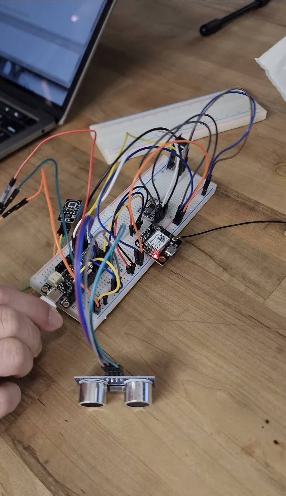

IoT Fall Detection System

Summary
We designed a wearable IoT-based fall detection system for elderly users.
It uses multiple sensors (IMU + ultrasonic + GPS) to detect falls and trigger both local alerts and remote notifications to caregivers or emergency responders.
Key Features
- Multi-sensor fall detection (MPU6050 + ultrasonic)
- IoT data transmission via ESP32 (Adafruit)
- GPS location sent for emergency response
- Vibration motor + buzzer for local alerting
- NFC tag for storing medical information
Highlights
- Reduced false positives using multi-condition trigger logic
- Integrated 6 different sensors into one embedded system
- Implemented real-time IoT alerting system
Report
View Full Project Report
← Back to Home